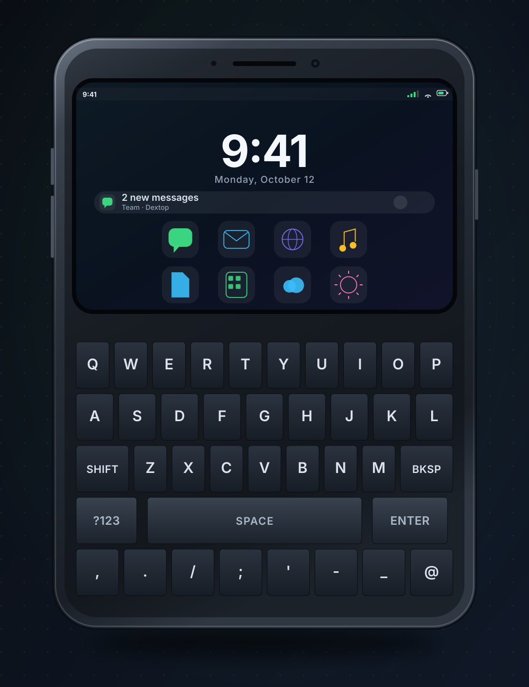
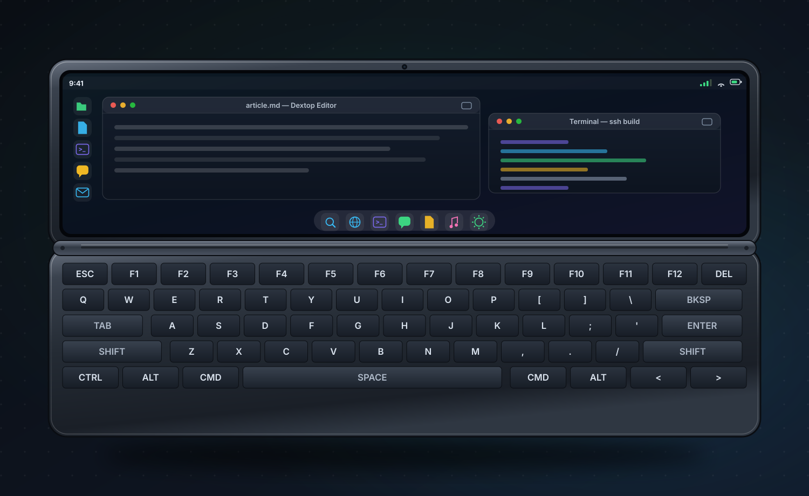
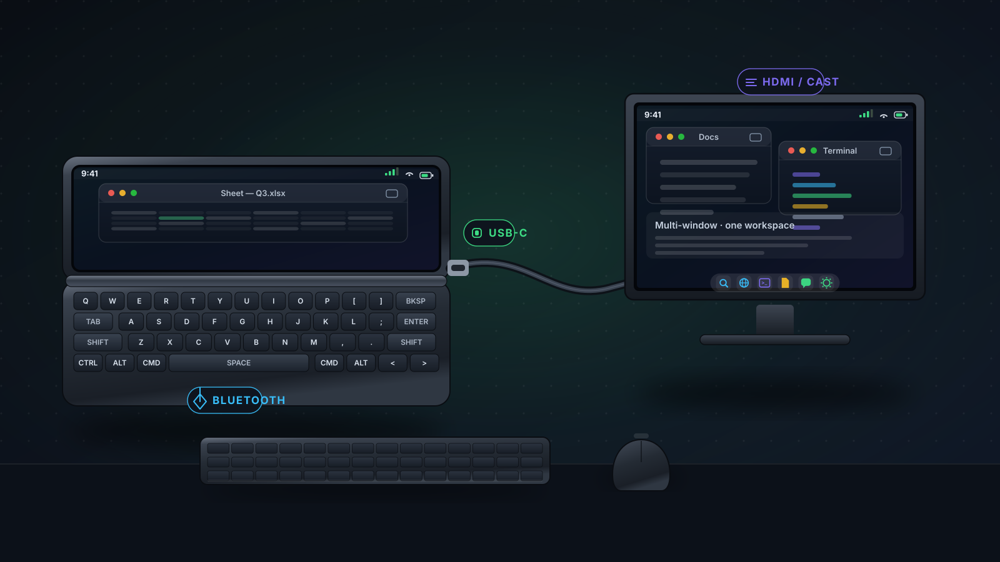

1. The E91 Legacy: The Last Communicator We Loved
The Nokia E91 was not trying to be a gaming console or a cinema. It was trying to be a computer that fits in a jacket pocket. Open it and you got a full QWERTY keyboard, a wide landscape screen, and a mail client that actually worked. Close it and it became a small, tough, all-day phone with a proper keypad for dialing and one-line replies.
Its big sibling, the E90 Communicator, went further: a clamshell that opened into a 4:3 landscape display the size of a small laptop, complete with a modifier-key row, arrow keys, and a mouse-ish navigation pad. Journalists, sysadmins, lawyers, and developers carried them for years. Whole careers ran through those hinges.
Then the industry decided that the future was a single sheet of glass, and physical keyboards were declared dead. In the process, something valuable was thrown out with the bath water.
2. What We Lost When the Slate Won
Touchscreens are wonderful for consumption and terrible for sustained production. The moment you need to write more than a sentence, juggle two documents, or work on a desk, a vertical glass slab becomes a bottleneck:
- Thumb typing caps out. On-screen QWERTY is fine for "ok" and useless for a 600-word email. You are typing at roughly half the speed of a physical keyboard, with autocorrect tax included.
- The screen is the wrong shape. A 20:9 portrait display is built for vertical scrolling, not for documents, terminals, spreadsheets, or timelines.
- No tactile anchors. Physical modifiers, arrow keys, and Escape are what make keyboard-driven work fast. Software keyboards approximate them and always get in the way.
- The phone will not stay put. A slate on a desk is a notification mirror. A clamshell lies flat at a natural angle, screen up, like a tiny laptop.
Between the foldable (a big, fragile tablet that folds) and the rugged slab sits an empty shelf: the productivity communicator. Nobody has filled it with modern Android silicon in a decade.
3. The Modern Communicator Form Factor
Imagine a 2026 flagship built the old way, but with the internals we now take for granted. Two distinct mechanical postures, one cohesive device, zero compromises in either state:
- Closed (Handheld & Pocket): A tactile portrait smartphone with a physical front thumb keyboard for rapid messaging, calls, navigation, and one-handed interactions.
- Open (Desk & Laptop): Unfolds via a precision dual-friction hinge into a landscape 16:10 workspace with a full keyboard, hardware modifier keys, and desktop windowing.
- Zero Creasing, Zero Fragility: Unlike folding OLED phones with delicate plastic crease screens vulnerable to dust and micro-fractures, the communicator uses two rigid, scratch-resistant displays built to last for years.
4. Closed Mode: The Portrait QWERTY Phone
Closed, it behaves exactly like the phones people already trust. A tall screen for calls, messages, maps, and media, and a real physical QWERTY keyboard occupying the lower half of the front, split into two thumb-friendly clusters just like the classic Nokia Eseries and BlackBerry Bold.

- Two-thumb typing at speed. Full alphanumeric keys with tactile travel, so you can answer mail while walking without looking.
- Reply without unlocking your brain. Shortcuts on the front half for the dialer, message composing, and voice memo, so the closed phone is self-sufficient.
- No second display to break. Unlike a foldable, there is no inner panel crease, no fragile flexible glass, no hinge-mounted screen. The display only exists in one orientation and stays cheap to repair.
- All-day battery in a slim body. A communicator chassis is roomier than a slab of the same thickness, so the battery can be bigger instead of the phone being thicker.
5. Open Mode: Full Landscape Keyboard + Desktop Shell
Flip it open and the device transforms. The upper half becomes a landscape display, the lower half a full physical keyboard with a function row, modifier keys, arrow cluster, and a proper spacebar. It stops being a phone-shaped object and starts being a pocket laptop.

- The right aspect ratio, finally. The open screen is landscape by construction, so documents, terminals, video calls, and dashboards render the way they were designed.
- A real keyboard map. Escape, Tab, arrows, Ctrl, and Alt exist as hardware. Shortcuts stop being gestures and become muscle memory.
- It lies flat on a desk. The hinge becomes a stand. Unlike a slab that slides around or needs a prop, a clamshell holds its own viewing angle.
- One device, two personalities. Portrait for the pocket, landscape for the desk, with completely separate shortcut layouts in each mode.
Android's developer options include a windowed/freeform mode. Turning it on before connecting a keyboard or monitor is the single biggest upgrade to a desktop-style workflow on Android.
6. Why It Would Be a Productivity Monster
This is the part the spec sheet cannot show: the form factor changes what you do with the device. When the default state of your phone is a keyboard and a landscape screen, it stops being a distraction device and becomes a workstation.

Real productivity workflows that become genuinely fast, accurate, and comfortable on a hardware communicator:
Distraction-Free Long-Form Writing & Correspondence
Draft 2,000-word articles, answer urgent corporate emails, and capture technical documentation at true touch-typing speeds. The wide 16:10 landscape display shows the entire document structure with margins, rather than squeezing text above a giant software keyboard.
DevOps, Cloud Infrastructure & Remote SSH Administration
Connect to AWS EC2 instances, Kubernetes clusters, or on-prem servers via Termux or ConnectBot. Hardware Esc, Tab, Ctrl, and directional arrow keys make Vim, tmux, and htop work exactly like they do on a full Linux workstation.
Financial Spreadsheets & Tabular Data Navigation
Navigating hundreds of rows and columns in Google Sheets or Microsoft Excel with touchscreen taps is frustrating. Dedicated hardware arrow keys let you jump between cells, edit formulas, and audit balances with desktop precision.
Air & Train Travel Without Tray-Table Gymnastics
Laptops are too wide for cramped coach seats when the passenger in front reclines. The communicator's rigid friction hinge holds any viewing angle self-supported on your lap or coffee table, giving you a full typing workstation in half the footprint.
Instant Desk Workstation Docking via USB-C
Plug one USB-C cable into a monitor at your office or hotel desk. The communicator immediately drives an external display with keyboard and mouse peripherals, transforming into a true multi-window desktop workstation with zero cloud lag.
Deep Cognitive Focus Over Infinite Feeds
Standard slab phones are engineered around vertical infinite scroll feeds designed to capture attention. A device whose default physical state is a tactile keyboard and landscape workspace inherently encourages intentional creation over passive consumption.
7. The Desktop Shell Already Exists (Dextop & Dextop Core)
Here is the encouraging part: you do not have to wait for an OEM to greenlight this dream. The software half of the communicator experience exists today, on the phone you already own.
What Android has always lacked is a desktop-class shell for landscape: an independent workspace with its own shortcuts, a taskbar, and window management that assumes a keyboard and a wide screen. That is exactly what Dextop delivers, and what Dextop Core delivers on devices whose manufacturers block third-party launchers.
On a communicator, that shell is at home rather than a workaround: a landscape screen and a hardware keyboard turn it into a genuine desktop environment. On your current slate, the same apps give you the landscape workspace whenever you rotate the device or dock it to a monitor.
8. The Spec Sheet We Want OEMs to Build
Not a retro novelty. A 2026 flagship with 2006 ambitions. Here is the wish list, in order of importance:
| Component | The Communicator Spec | Why It Matters |
|---|---|---|
| Closed front | ~6.1" portrait display + portrait QWERTY in two thumb clusters | A real one-hand phone with tactile replies and dialing |
| Open display | ~7.8" landscape OLED, 16:10 or 4:3, ~120Hz | Correct aspect ratio for documents, terminals, and video calls |
| Open keyboard | Full landscape QWERTY, F-row, arrow cluster, hardware modifiers | Muscle-memory shortcuts and full-speed typing |
| Connectivity | USB-C with DisplayPort alt mode, Bluetooth 6, Wi-Fi 7 | One-cable desktop output, plus BLE peripherals |
| Shell | Landscape desktop environment with independent shortcuts and taskbar | Android that behaves like a computer when opened |
| Battery | 5,000mAh+ in a clamshell chassis | All-day typing and casting without a charger |
Phone makers read sales numbers, not blog posts. But they also read the niche press. The fastest way to make this real is to say it out loud: we want a communicator flagship, and we will pay flagship prices for it.
9. E91 vs. Modern Slate vs. Modern Communicator
| Capability | Nokia E91 (2006) | Modern Slate (2026) | Modern Communicator |
|---|---|---|---|
| Physical keyboard | Full QWERTY | None | Portrait + landscape |
| Correct screen shape for work | Small, low-res | Portrait-first | Landscape when open |
| Desktop shell | Symbian UI | Mirrored slab | Dextop / Dextop Core |
| External monitor output | No | Flagship only | USB-C DP + cast |
| Repairability | Simple | Glorified glass sandwich | No inner foldable panel |
| Focus / distraction | Work tool | Feed machine | Opens into a desk |
10. Frequently Asked Questions
The niche is smaller than the slab market but it is loyal and chronically underserved. Nokia sold millions of Eseries communicators, Unihertz kept the category alive with its Titan line, and foldables proved that people will pay a premium for more screen and better keyboard use cases. Aimed at writers, developers, field workers, and executives, a communicator competes on output per hour, not megapixels.
Yes. Android already handles landscape orientation, USB and Bluetooth keyboards, multi-window, and external displays over USB-C DisplayPort or casting. What has been missing is a desktop-class shell. Launchers such as Dextop and Dextop Core supply a native landscape desktop layout with independent shortcuts, a taskbar, and desktop-style app switching on any Android device.
Not quite. A foldable gives you a big screen with no keyboard: you still carry a Bluetooth keyboard or type on glass. A communicator bakes the keyboard into the chassis, keeps the closed state genuinely phone-shaped, and avoids a flexible inner panel that creases, costs a fortune to replace, and invites debris into the hinge.
No. A landscape communicator screen is already desktop-shaped, so Dextop or Dextop Core works standalone on the device itself. Adding a USB-C dock or casting to a monitor turns the same phone into a full workstation with zero extra software.
Open the Lid on Your Current Phone
We may be waiting a while for a hardware manufacturer brave enough to build the communicator flagship. In the meantime, the desktop half of that vision is already downloadable: rotate your phone, dock it to a monitor, and let a real landscape shell do the rest.